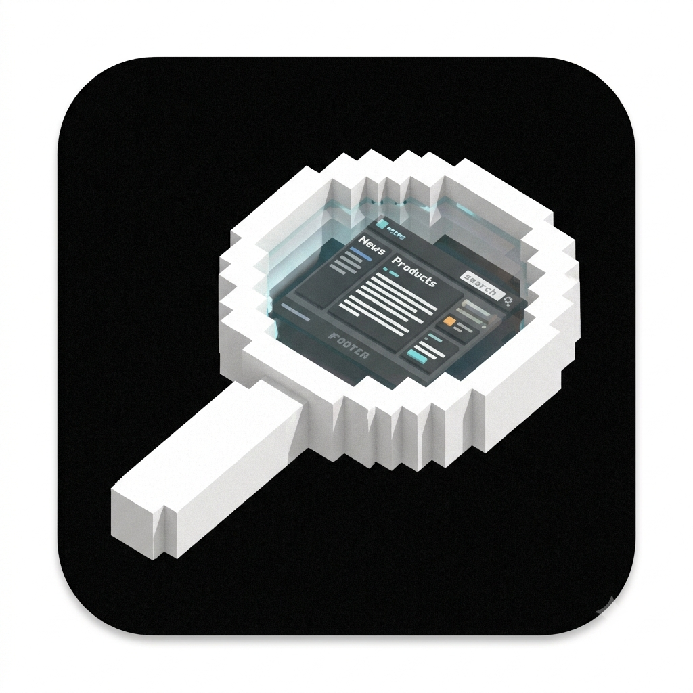

Comment on any website.
Let an AI agent fix it.
Pick an element on any page, jot a note, and tag it with a
memorable slug like dancing-gorilla. Your comments flow to a
local MCP server that Claude Code, Cursor, and other agents read — and
resolve.
Press
🎯 Pick any element
A VisBug-style picker highlights whatever's under your cursor — including elements inside shadow DOM and third-party widgets. Click to attach a comment.
🏷️ Human-readable slugs
Every element gets a Docker-style handle like
dancing-gorilla. Reference it in prose — “replace
dancing-gorilla with a spinner” — and rename it anytime.
🗂️ Grouped comments
📜 Review curtain
A panel on the right lists every comment on the page. Click one to scroll to and highlight its element.
🔌 MCP for agents
A local server exposes comments over the Model Context Protocol —
list_open_comments, resolve_comment, and more
— via Streamable HTTP or stdio.
🧭 Resilient anchors
Each comment stores a multi-anchor descriptor (optimized selector, stable attributes, text, nth-path) so highlights survive most DOM changes.
How it works
The extension pushes each comment to a local server over REST.
An Express + SQLite service keeps comments per page URL.
An AI agent reads them over MCP, edits the code, and resolves each.
Install & run
1 · Run the MCP server (Docker)
The server ships as a container on the GitHub Container Registry.
Comments persist in the mounted ~/.site-review volume.
2 · Connect your agent
Point Claude Code (or any MCP client) at the running server:
3 · Load the extension
Build it from source, then load
packages/extension/.output/chrome-mv3 as an unpacked
extension in Chrome.
pnpm start:server after
pnpm build, or wire the stdio entry directly into your
agent. See the README.